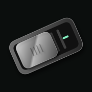
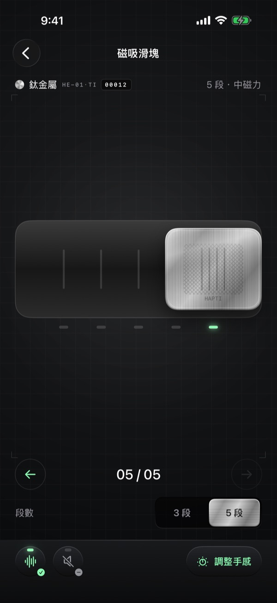
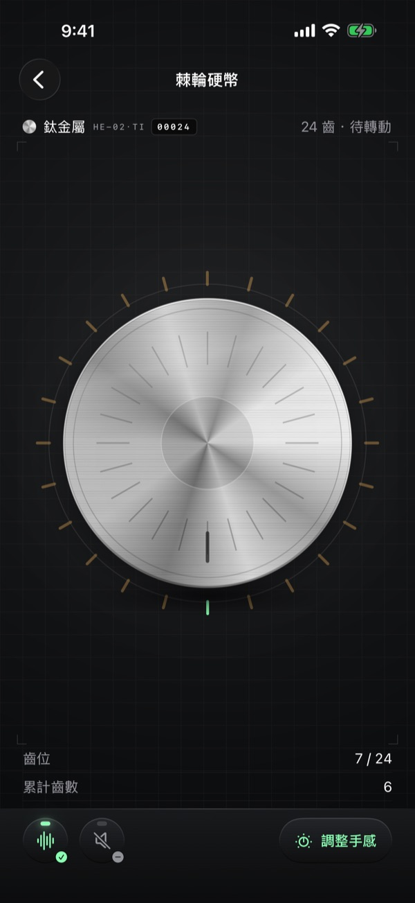
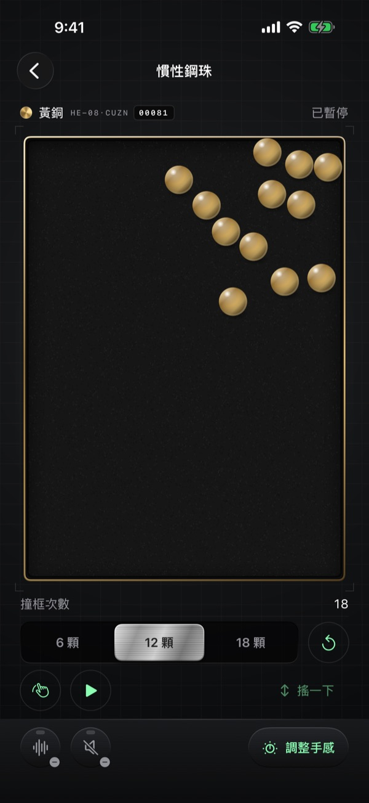
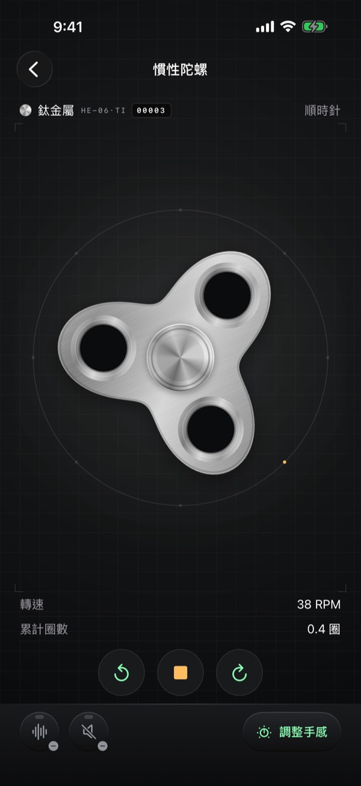
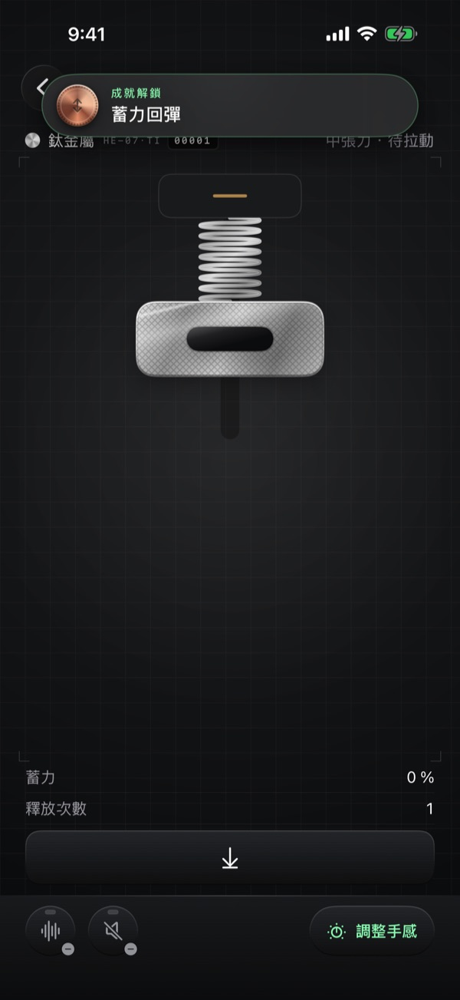
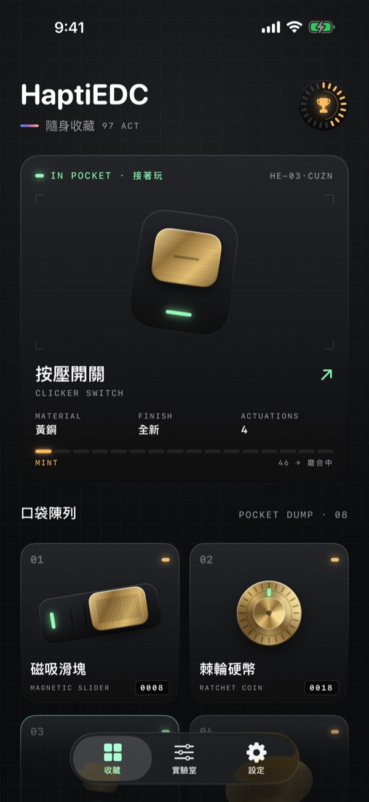

Eight hands-on tactile toys. Every snap, tooth, press and collision has its own designed sound and vibration — and every material feels different.
Download on the App StoreOne-time purchase · No ads · No subscription · Works offline




